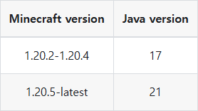
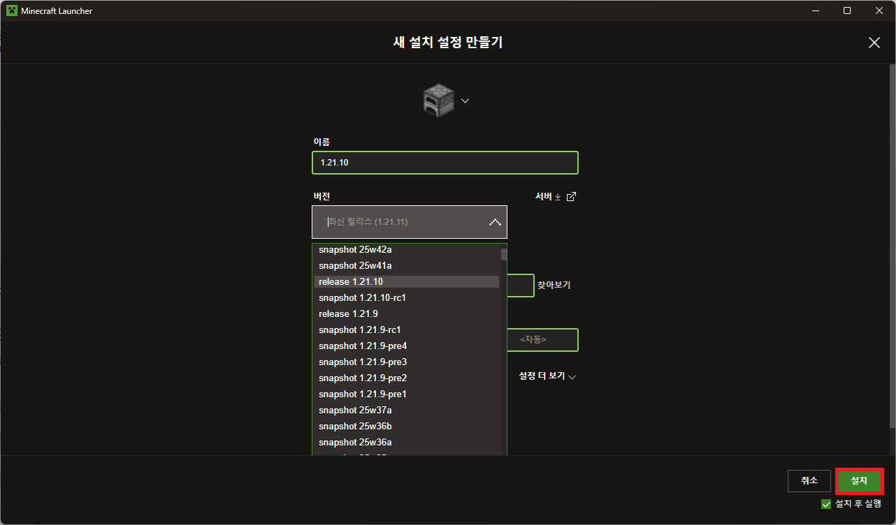
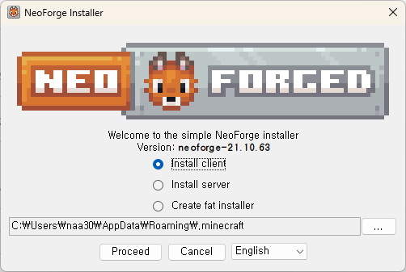
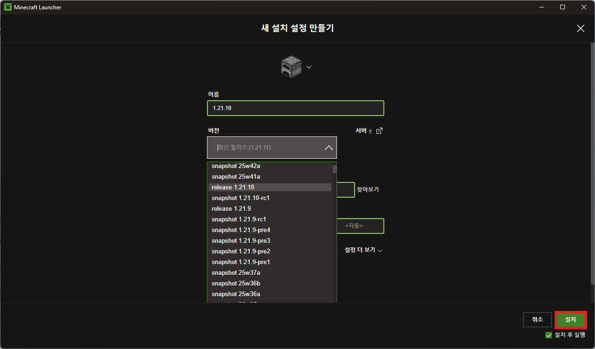
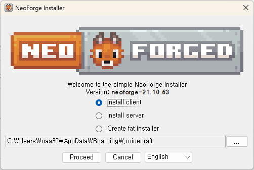
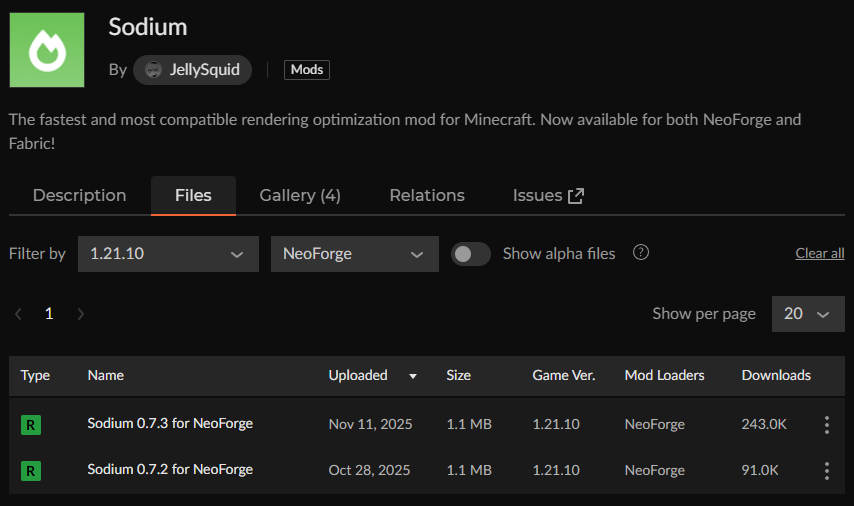
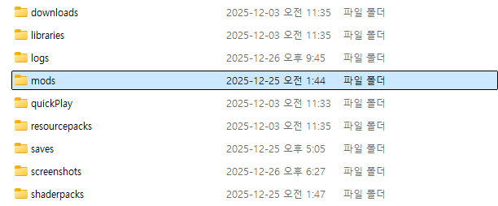
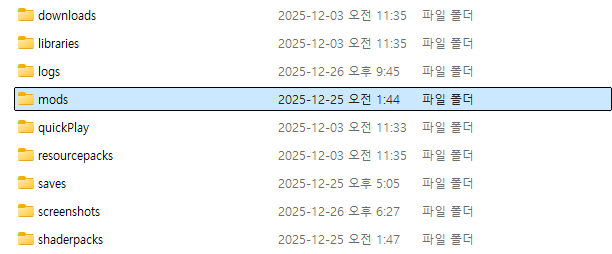

NeoForge 설치
NeoForge는 마인크래프트의 모드 로더 중 하나로, 마인크래프트에 다양한 모드를 적용할 수 있도록 해줍니다. 현재 널리 사용되는 모드 로더로는 Forge, Fabric, NeoForge 등이 있습니다. 아래에서는 이러한 모드 로더 중 하나인 NeoForge를 다운로드하여 마인크래프트에 적용하는 방법을 설명합니다.
Java 설치
NeoForge Installer를 실행하기 위해서는 java가 설치되어 있어야 합니다. java는 여기에서 다운로드할 수 있습니다. 플레이하려는 마인크래프트의 버전에 따라 설치해야 할 java의 버전이 다릅니다. 아래 표를 참고해주세요.  운영체제와 시스템 아키텍처(Windows: 32/64비트, macOS: Intel / Apple Silicon 등)에 따라 설치 방법이 다릅니다. 적절한 버전을 설치한 뒤에, 다음 단계로 넘어가 주세요.
NeoForge Installer 다운로드
NeoForge는
여기에서 다운로드할 수 있습니다.
설치하기 이전에, Minecraft Version과 NeoForge Version을 선택해야 합니다.
적용하고자 하는 모드가 있다면, 해당 모드가 지원하는 버전을 확인하고 설치하셔야 합니다.
 Download Installer 버튼을 누르면 JAR 파일(*.jar) 형식의 설치 파일을 다운로드할 수 있습니다.
Download Installer 버튼을 누르면 JAR 파일(*.jar) 형식의 설치 파일을 다운로드할 수 있습니다.
NeoForge 설치
마인크래프트 런처가 설치되어 있다고 가정하고 설명을 진행합니다. NeoForge를 설치하기 이전에,
먼저 마인크래프트 런처에서 해당 마인크래프트 버전을 다운로드해야 합니다.
마인크래프트 런처를 실행하고, 설치 설정으로 들어가 원하는 마인크래프트 버전을 설치합니다.
아래는 예시로 마인크래프트 버전 1.21.10을 설치하는 과정을 보여줍니다.
 
설치를 완료하고 나면, 앞서 다운로드했던 NeoForge Installer를 실행합니다.
java가 성공적으로 설치되어 있다면, 더블클릭으로 JAR 파일을 실행할 수 있습니다.

실행하면 위와 같은 창을 확인할 수 있습니다.
마인크래프트 파일 경로가 올바르게 지정되어 있고, Install client가 선택되어 있다면 Proceed를 눌러 설치를 진행하면 됩니다.
특별한 문제가 없다면 기본값이 자동으로 올바르게 설정되어 있습니다.

설치를 완료하고 나면, 앞서 다운로드했던 NeoForge Installer를 실행합니다.
java가 성공적으로 설치되어 있다면, 더블클릭으로 JAR 파일을 실행할 수 있습니다.

실행하면 위와 같은 창을 확인할 수 있습니다.
마인크래프트 파일 경로가 올바르게 지정되어 있고, Install client가 선택되어 있다면 Proceed를 눌러 설치를 진행하면 됩니다.
특별한 문제가 없다면 기본값이 자동으로 올바르게 설정되어 있습니다.
 위와 같은 설치 성공 메시지가 출력되면 설치가 완료된 것입니다.
이제 마인크래프트 런처를 다시 실행하면, 아래와 같은 플레이 설정을 확인할 수 있습니다.
위와 같은 설치 성공 메시지가 출력되면 설치가 완료된 것입니다.
이제 마인크래프트 런처를 다시 실행하면, 아래와 같은 플레이 설정을 확인할 수 있습니다.

모드 적용 방법
모드를 사용하려면 NeoForge 설정으로 게임을 한 번 이상 실행해야 합니다. 앞에서 설정한 플레이 설정으로 게임이 잘 실행되는지 확인한 후 종료하고 다음 단계로 넘어가 주세요.
모드 파일 확인
적용할 모드의 JAR 파일이 있어야 합니다.  해당 파일이 NeoForge용 모드인지 확인하고, 모드가 지원하는 마인크래프트 버전이 현재 설치된 버전과 일치하는지도 반드시 확인해야 합니다. 예를 들어, 마인크래프트 1.21.10 버전의 NeoForge를 설치했다면, 다음과 같이 동일한 버전을 지원하는 NeoForge용 모드 파일을 검색하여 다운로드해야 합니다.
.mods 폴더 확인
 NeoForge 설정으로 게임을 한 번 이상 실행했다면, %appdata%의 .minecraft 폴더 안에 mods 폴더가 있는 모습을 확인할 수 있습니다.

mods 폴더 안에 앞서 다운로드한 모드의 JAR 파일을 넣은 뒤에, NeoForge 설정으로 게임을 실행하면 모드가 적용된 채로 게임을 플레이할 수 있습니다.
게임 내에서도 아래와 같이 적용된 모드를 확인할 수 있습니다.
NeoForge 설정으로 게임을 한 번 이상 실행했다면, %appdata%의 .minecraft 폴더 안에 mods 폴더가 있는 모습을 확인할 수 있습니다.

mods 폴더 안에 앞서 다운로드한 모드의 JAR 파일을 넣은 뒤에, NeoForge 설정으로 게임을 실행하면 모드가 적용된 채로 게임을 플레이할 수 있습니다.
게임 내에서도 아래와 같이 적용된 모드를 확인할 수 있습니다.